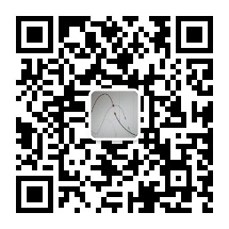

Yuzheng Wu
PhD in Biotechnology · Bioimaging Data Curation
Exploring bioimaging data curation, artificial intelligence, software development, and human-centered technology.
About Me
I am a biotechnology researcher and data curation based in Japan. My interests include bioimaging databases, scientific data curation, AI-assisted workflows, data science, and technologies that improve life science research.
Research & Interests
- Bioimaging data curation
- Scientific data management
- AI-assisted research workflows
- Software development for research support
- Human-centered technology
Public Account / Personal Media
I also share thoughts on biotechnology, bioimaging database, personal development, and daily life in Japan through my personal media channels.
WeChat Official Account: 吳蘇慕

Gallery


Contact
Email: yuzheng.wu@riken.com